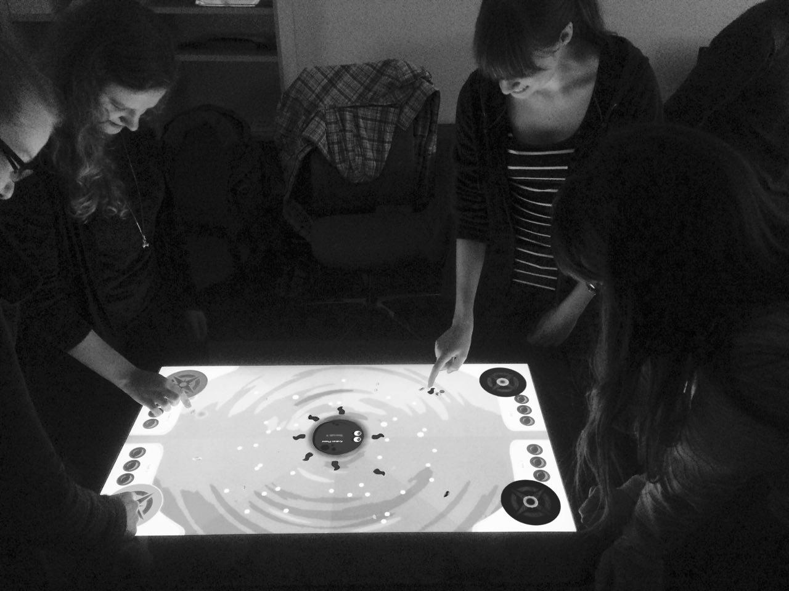
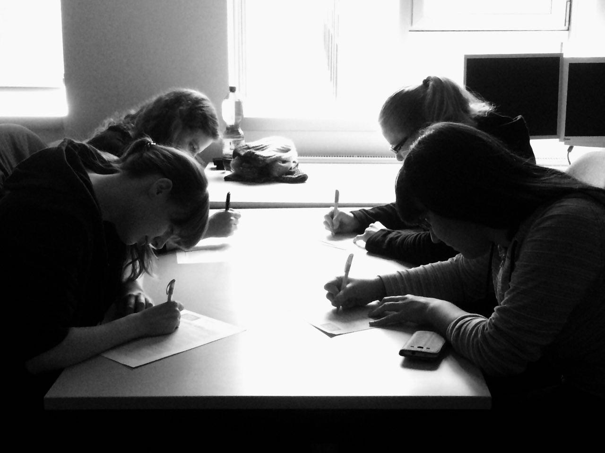

Nutzertests

Um ein Spiel erfolgreich zu programmieren, sodass es Spaß macht, verständlich ist, (weitestgehend) fehlerfrei funktioniert und auch gern gespielt wird, sind zahllose Stunden an Arbeit und Spielrunden nötig. Als Entwickler selbst gewöhnt man sich aber schnell an sein eigenes Projekt, mit allen seinen kleinen Schwächen. Ob unbewusst oder nicht, man setzt übermächtige Strategien ein, weil die Balance der Spielfaktoren fehlt, vermeidet Handlungen und Bugs, die das Spiel abstürzen lassen, verwendet aber solche, die für einen vorteilhafte Spielfehler oder Glitches hervorrufen. Um trotz der „Betriebsblindheit“ diese Probleme zu finden und auszumerzen, ist Hilfe von außen nötig. Fremde Personen müssen her, die von dem Spiel und seinen Besonderheiten wenig Ahnung haben, damit sie Programmfehler aufdecken und schlussendlich erst ermöglichen, das Spiel abzurunden und gut werden zu lassen. Die Rede ist hierbei natürlich von Nutzern und Nutzertests.
Für SEAdventure wurden vorwiegend Nutzer aus den Freundeskreisen des Entwicklerteams für Tests herangezogen. Damit war die Altersvielfalt der Nutzer zwar etwas eingeschränkt, dafür gab es aber einerseits Tester, die kaum oder nie Spiele in dieser Form gespielt haben, andererseits aber auch solche, die mit verschiedenen Spielgenres und Spielplattformen wie PC, Konsolen, Handhelds oder Mobilgeräten Erfahrung gesammelt haben. Auf diese Weise konnten Bugs und Balancing Probleme entdeckt werden, während parallel dazu Verbesserungsvorschläge von den Nutzern eingebracht wurden.

Der Ablauf der Tests war fest geplant, um einen reibungslosen Ablauf zu gewährleisten. Nach einer freundlichen Begrüßung der Teilnehmer wurde ihnen nicht kurz erläutert, wie das Spiel funktioniert und was das Spielziel ist. Sie wurden einfach für ein oder zwei Runden an den Tabletop gestellt, um das Spiel auf eigene Faust zu erkunden und auszuprobieren. Bei späteren Tests wurde an dieser Stelle von den Spielern intuitiv zuerst das Tutorial durchlaufen. Nach dem Ausprobieren von SEAdventure wurden aufkommende Fragen zum Spielablauf beantwortet und erstes Feedback notiert. Dann, nachdem sichergestellt wurde, dass alle Teilnehmer mit den Spielregeln vertraut sind, wurden weitere Runden gespielt, bis klar wurde, dass sich die Spieler eingespielt hatten und alle Spielelemente gut kennenlernen konnten. Das Feedback bis zu diesem Zeitpunkt war aber situativ und nur auf vereinzelte Spielelemente konzentriert, weil sich die Tester vor allem auf die Spielelemente konzentrierten, die ihnen am meisten auffielen oder Schwierigkeiten bereiteten. Aus diesem Grund gab es am Ende des Tests jeweils einen Fragebogen, in dem noch einmal alle Spielelemente und für die Entwickler interessante Fragestellungen vorkamen. Auf diese Weise wurden die Tester dazu gezwungen, sich gedanklich noch einmal mit allen Spielsituationen zu beschäftigen. Damit stieg zwar die Masse an auszuwertenden Informationen deutlich, dafür waren darunter aber wertvolle Hinweise, die bei der weiteren Spielentwicklung helfen konnten.
In unseren Fragebögen wurden zum Beispiel folgende Fragen gestellt:
Ist das Spielziel und die Möglichkeiten es zu erreichen klar?
Diese Frage dient als Einstieg in den Fragebogen und als Sicherung dafür, dass das absolute Minimum an notwendigen Spielinformationen vermittelt wurde. Ohne das Wissen, wie das Spielziel erreicht werden kann, lässt sich ein Spiel nicht sinnvoll spielen. Diese Frage wurde immer mit „Ja“ beantwortet, wenn auch anfangs mit Abstrichen, weil gerade ohne Tutorial der Einstieg etwas verwirrend ausgefallen ist.
Wie gut funktioniert die Armsteuerung mittels der Steuerfelder?
Eine Frage, die sich gezielt mit den Krakenarmen beschäftigt. Wir haben lange und intensiv an der Steuerung gearbeitet, weshalb dies immer eine der ersten Fragen war. Neben Problemen mit dem Tabletop und unseren eigenen Lösungsansätzen haben wir uns auf Feedback von Nutzern verlassen, um die Probleme in den Griff zu bekommen. In der Frage wird noch einmal das Steuerfeld erwähnt, damit die Steuerungsmethode garantiert klar ist. In den Tests war hier eine Steigerung nach jeder Entwicklungsphase sichtbar. Die Steuerung wurde also stetig verbessert und weiter verfeinert, bis sie den fertigen, gut funktionierenden Stand erreichte.
Wie gut funktioniert das Leiten der Schiffe mit den Rettungsringen?
Das Gegenstück zur Krakensteuerung ist die Schiffsteuerung. Daher wurde auch hier frühzeitig und stets zu Beginn des Fragebogens bei den Nutzern nachgehakt. Im Vergleich zur Steuerung des Krakenarms war die Schiffsteuerung weniger problematisch und fehleranfällig. Negatives Feedback war die Winkelbegrenzung, die verhindert, dass Schiffe zu scharfe Winkel fahren. Sie wurde dem Spieler anfangs nicht ausreichend kenntlich gemacht, was zu Verwirrung führte. Mit diesem Feedback wurde deshalb ein Schattenring eingebaut, während der echte Rettungsring beim maximal möglichen Fahrtwinkel verbleibt. Damit ist einerseits immer ein stabiler Kurs vorhanden, während der Spieler sieht, dass er offenbar einen Fehler macht. Es gab anfangs teilweise noch Probleme beim Erfassen der Rettungsringe. Manchmal sind aber die simplen Lösungen die besten: die Größe der Ringe anzupassen hat diese Schwierigkeit sofort behoben. Da die Ringe nur in der Schiffsphase vorhanden sind, stören sie auch nicht den Überblick, weshalb diese Änderung nur Vorteile hatte.
Wie gut funktioniert die Steuerung allgemein?
Eine Restfrage, um noch einmal weiteres Feedback zur Steuerung einzuholen. Vielleicht wäre das Power-Ups einsetzen unklar und nicht umsetzbar, vielleicht gibt es Elemente, die man berühren will, aber nicht kann, vielleicht fehlt Buttonfeedback beim Starten des Spiels – alle diese Fragen sind wichtig, benötigen aber nicht komplette, eigene Fragen. Sollte es hier keine Schwierigkeiten geben, so liegt diese Frage bei den beiden vorher beschriebenen, um den Nutzern mehr Platz zum Antworten zu geben. Einige Nutzer haben auch ihre vorherigen Antworten wiederholt, was für uns ein Zeichen war, dass es in diesen Bereichen wirklich Verbesserungen geben muss.
Gibt es Manöver, die aufgrund der Steuerung nicht umsetzbar waren?
Die Steuerung ist Mittel zum Zweck. Man will nicht den Kraken steuern oder Schiffskurse vorgeben – man will Perlen einsammeln und die anderen Spieler daran hindern. Aus diesem Grund ist nicht nur wichtig, ob die Steuerung grundsätzlich funktioniert. Wichtiger ist, ob sie so robust und vielseitig ist, dass sie verschiedene, auch durchaus komplexere Manöver zulässt. Auf diese Weise kann ein erfahrener Spieler eventuell mit dem Krakenarm einem Schiff und seinen Kanonenkugeln ausweichen, sich Perlen schnappen und wieder verschwinden, ohne getroffen zu werden. Andererseits können Schiffe längere Kurse fahren, mehrere Bereiche abdecken und einzelne gesondert schützen, abhängig davon, wie viele Schiffe zur Verfügung stehen, welche Schiffstypen der Spieler gerade hat und wie vorausschauend er Routen, gerade vorhandene Perlen und Fässer, Power- Ups anderer Spieler und die aktuell gesteuerten Krakenarme einplant.
Erst damit kann SEAdventure eine höhere Komplexität und Langzeitmotivation erreichen. In den ersten Tests, gerade mit den „Anfängern“, gab es hier nur wenige verwertbare Antworten. Die Spieler waren mehr mit sich selbst und den Steuerungsproblemen beschäftigt. Später änderte sich dies aber. Die Spieler zogen ihre Schiffskurse geplant, mussten sich zwischen Einsammeln von Fässern und dem Schutz von Perlen entscheiden, oder setzten die gesamte Zeit ihrer Runde darauf, einem Schiff einen annähernd perfekten Kurs zu geben. Mit ihren Krakenarmen gingen sie später vor allem deutlich aggressiver vor. Sie haben, wenn eine Perle bewacht wurde, meist direkt das Schiff gerammt. Selbst wenn sie dabei einmal getroffen werden, das Schiff bleibt länger betäubt, womit sie sich Perlen sichern konnten. In anderen Situationen wurde das Schiff umfahren und Perlen gesammelt, wenn es gerade weiter entfernt war. Den vereinzelten Schüssen, die auf den Krakenarm zukamen, wurde dann leicht ausgewichen. Nachdem die Steuerprobleme behoben waren, ließen sich eine Vielzahl von Manövern und Angriffsstrategien umsetzen, gerade dann, wenn die Spieler mehr Erfahrung hatten.
Wie ist das Tempo des Spiels? Wie ist die Länge der Phasen?
Vieles in Seadventure wird über die Zeit gelöst. Perlen einsammeln und Schiffskurse setzen dauert eine Weile. Ziel soll sein, dass sich die Spieler mit tickender Uhr im Nacken unter Druck gesetzt fühlen, während sie ihre Entscheidungen treffen. Andererseits ist sie auch aus Balance Gründen wichtig: Ein Spieler mit vielen Schiffen ist nur dann übermächtig, wenn seine Zeit einteilt, um sie allesamt zu bewegen. Der Krakenarm kann auf lange Sicht hin irgendwann alle Perlen in seinem Bewegungsbereich erreichen, er wird dafür nur länger brauchen, als ihm die Rundendauer an Zeit gibt.
Mit dem Spieltempo haben wir schnell einen guten Mittelwert gefunden. Die Zeit ist ausreichend, ein bis zwei Schiffe gezielt zu kommandieren, aber bei mehr lassen sich nur hastige, schnelle Kurse ziehen. Der Krakenarm kann Perlen sammeln, wird er aber getroffen und betäubt, verliert er genug Zeit, dass er weniger sammelt als seine Konkurrenten, die munter weitersammeln, während er handlungsunfähig ist.
Hauptkritikpunkt war hier der plötzliche Übergang der beiden Phasen. Von einem Moment auf den anderen hat sich die Aufgabe im Spiel völlig gedreht, was die Spieler überforderte. Daraus entstand später die Pausephase, um Zeit zum Umdenken und Planen zu geben.
Wie komplex ist das Spiel? Sind die Spielregeln verständlich?
Eine Frage, die erneut den Spielablauf thematisiert. Sie hat einen ähnlichen Bereich wie die Fragen um Spielziel und Manövermöglichkeiten. Durch die Wiederholung wurde aber ein besseres, gezielteres Feedback ermöglicht. Hier zeigten sich die Ergebnisse der früheren Fragen noch deutlicher. Am Anfang war die Steuerung schwieriger als das Spiel selbst, später wurde es, gerade durch das Tutorial, besser.
Wie wirkt die Grafik? Ist der Stil ansprechend und passend?
Ein Auszeichnungsmerkmal von SEAdventure ist der bunte, fröhliche Grafikstil. Sämtliche Bilder und Zeichnungen sind selbst angefertigt, mit dem Ziel, eine Grafik passend zu einem eher lockeren, leicht zugänglichen Spiel zu entwerfen. Wir haben in jedem Test als Rückmeldung nur Lob und Bestätigung für die Grafik erhalten. Dies hat uns darin bestärkt, diesen Stil beizubehalten und weitere Inhalte ausführlich zu gestalten. Damit hat das SEAdventure eine einheitliche, zusammengehörige grafische Gestaltung.
Wie stark wirken die Arme?
Hier beginnt ein weiterer Fragenkomplex um die Balancierung der Spielmechaniken. In unserem kompetitiven Spiel ist dies von großer Bedeutung, denn wenn es hier Schwierigkeiten gibt, verlieren die einen ohne Chance aufzuholen, während sich die Gewinner irgendwann langweilen, weil sie ohne große Anstrengung und Spannung gewinnen.
Bei den Krakenarmen waren zuerst die Geschwindigkeit und das erreichbare Areal entscheidend. Das Areal war groß genug, um immer ein paar Perlen erreichen zu können (auch wenn Perlen, die man geradeso nicht erreichen kann, nicht vermeidbar sind) und gleichzeitig direkte Konkurrenz zu anderen Spielern zu haben, wenn diese einen Arm direkt neben dem eigenen erhalten und einem Perlen wegschnappen können.
Die Geschwindigkeit war nach geringen Anpassungen so, dass man bei maximaler Geschwindigkeit vor Schiffen fliehen konnte, um Treffer zu vermeiden und Perlen zu sichern, gleichzeitig bei gesenkter Geschwindigkeit ausweichen und kleine Korrekturen fahren kann.
Was ursprünglich nicht aufgefallen war, ist die Betäubungszeit der Kraken. Sie hat die Spieler aufgehalten, gerade wenn ein Krakenarm mehrere Treffer hintereinander erhält. Aber dies ist zum Teil ein eingeplanter Fall im Spiel. Sind die Krakenarme stärker, kommen also auch gegen mehrere Schiffe an, werden alle Perlen eingesammelt und es geht nicht mehr darum, wer mehr einsammeln kann, sondern in wessen Bereich mehr und bessere Perlen auftauchen. Aus diesem Grund sind die Arme etwas schwächer als mehrere Schiffe, was die Spieler anfangs zwar negativ aufnahmen, aber Teil des Spielaufbaus ist.
Wie nützlich sind die Schiffe und Schiffstypen?
Wenn nach der Krakenstärke gefragt wird, bieten sich danach Fragen zu den Schiffen an. Da die Schiffe mehr Merkmale haben, wurde hier auch mehr abgefragt, wie etwa Geschwindigkeit, Reichweite, Größe, Anzahl oder Schussfrequenz. Zudem muss auch noch zwischen den Schiffstypen, die es im Spiel gibt, unterschieden werden.
Da die Schiffe aus Gründen des Spielablaufs geplant stärker sind, wurde von den Testern die Nützlichkeit der Schiffe betont. Besonders die kleinen Schiffe wurden als stark bezeichnet, weil sie mit ihrem hohen Tempo einen längeren Kurs fahren können. Gerade mit Power-Ups, die die Geschwindigkeit weiter steigern, sind sie rasend schnell. Später, als die Tester länger Zeit hatten, verschiedene Schiffe einzusetzen, kamen bei den Nutzers auch die Vorzüge der großen Schiffe an, die mit hoher Feuerrate und -Reichweite einen Bereich stark abriegeln können.
Gibt es Schiffstypen, die noch im Spiel auftauchen sollten?
Eine Frage für die ersten Tests zu Beginn der Entwicklung. Von Anfang an waren die drei Schiffstypen eingeplant, wie sie hier beschrieben werden, aber es gab Überlegungen, dass sich vielleicht noch weitere anbieten könnten. Vielleicht haben ja unsere Nutzer weitere Ideen und Wünsche? Unsere Spieler waren aber wie wir selbst mit den vorhandenen Schiffstypen zufrieden. Sie decken alle wichtigen Spielbereiche ab und reichen damit vollkommen aus. Später wurde diese Frage gestrichen.
Wie stark sollten Power-Ups sein?
Der hintere Bereich der Fragebögen drehte sich Vor allem am Anfang um Inhalte, die nicht oder noch nicht vollständig im Spiel enthalten waren, wie etwa die Power-Ups. Daher gibt es hier allgemeine Fragen zum Design dieser Features. Gewünscht war hier die goldene Mitte – nicht so stark, dass man allein durch das richtige Power-Up gewinnt, aber auch nicht so schwach, dass sie gar keine Wirkung haben. Gelöst haben wir das, indem sich gerade die Verstärkungen und Abschwächungen gegenseitig aufheben. Sie sind stark, können aber durch Intervention des Gegners verringert werden, bis ihre Wirkung völlig verschwindet. Die Schiffe aus Power-Ups können zerstört werden, was ihre Macht im Vergleich zum Startschiff ausgleicht. Sobald Power-Ups im Spiel implementiert waren, wurde diese Fragestellung entfernt.
Sollten Spieler mit weniger Punkten bessere Power-Ups erhalten?
Einige Spiele benutzen Power-Ups als Aufholmechanik. Spieler die zurückliegen, erhalten Möglichkeiten, gezielt die stärkeren Spieler zu attackieren und sich selbst wieder in das Rennen um den Sieg zu katapultieren. Da wir ähnliche Überlegungen hatten, wollten wir von unseren Testern wissen, ob sie sich etwas Ähnliches in SEAdventure vorstellen könnten.
Die Rückmeldungen waren negativ. Die Spieler wollten nicht das Gefühl haben, allein durch bessere Power-Ups (und damit schlussendlich durch Zufall) gewonnen zu haben und nicht, weil sie besser gespielt haben. Damit haben wir uns gegen diese Idee entschieden und sie nicht weiter verfolgt.
Welche weiteren Power-Ups sollten noch in das Spiel?
Parallel zu den Schiffstypen hätte es noch Power-Ups geben können, die sich die Tester unbedingt wünschen. Nach den Tests hat sich aber gezeigt, dass die vorhandenen mehr als ausreichend sind. Die im Spiel existierenden, haben schon genug Einfluss auf den Spielablauf, sodass weitere für zu viel Verwirrung und Chaos sorgen könnten.
Wie stark wirken die Power-Ups?
Diese Frage kam später dazu, als die Power-Ups vollständig integriert waren. Während die Stärke der Schiffstypen, die großteils von Power-Ups kommen, bereits in einer anderen Frage thematisiert wurden, gab es Effekte, die nur durch Power-Ups erzielt werden können, wie andere Geschwindigkeiten oder Angriffsstärken.
Das Feedback zu den Schiffen wurde hier wiederholt. Bei den Anderen Auswirkungen erschien die Geschwindigkeit wichtiger zu sein als die Veränderung der Kanonenstärke. Aus diesem Grund gab es als zusätzlichen Effekt für diese, gleichzeitig die Betäubungsdauer des Krakens zu verändern. Damit wurde sichergestellt, dass alle Power-Ups ausreichend Einfluss haben.
Hat der Test Spaß gemacht? Würdest du das Spiel weiterhin spielen wollen?
Abschlussfragen zum Beenden des Fragebogens. Während die erste Frage wenig Aussagekraft hat, weil eigentlich alle Tester sie mit „ja“ beantworteten, hat die zweite Aufschluss über die mögliche Langzeitmotivation des Spiels gebracht. Hier kam von den Meisten die Antwort, sie würden gerne noch länger spielen, weil sie gefühlt noch nicht alle Features und Möglichkeiten des Spiels ausgeschöpft hätten. Zudem würden sie sich gerne im Wettkampf gegen ihre Mitspieler beweisen. Damit war klar, dass wir unsere Ziele erreicht haben, gelangten aber auch zur Erkenntnis, wie sehr allein ein kompetitiver Wettstreit die Spielmotivation fördern kann.
Der Rest des Fragebogens wurde mit einem freien Feld für sonstige Anmerkungen aufgefüllt. Es gibt immer Aspekte, die man übersieht, weshalb sich ein solcher Bereich anbietet. Die meisten haben ihn dazu genutzt, um erneut zu betonen, was ihnen an Feedback wichtig war und wie viel Spaß ihnen das SEAdventure gemacht hat.
Als Fazit aus den Nutzertests ziehen wir den Schluss, dass sie uns bei vielen Aspekten die Augen geöffnet und auf jeden Fall eine starke Verbesserung des Spielerlebnisses ermöglicht haben. Wir danken allen Testern für ihre Zeit und netten Worte!
 Daneben haben die Schiffe aber noch eine zweite Aufgabe. Sie können im Wasser treibende Fässer aufsammeln, wenn das Treibgut auf ihrem Kurs liegt. In diesen Fässern können Gegenstände versteckt sein, die dem Spieler Spezialfähigkeiten verleihen, wie zum Beispiel höhere Fahrgeschwindigkeit für seine Schiffe oder die Möglichkeit neue Schiffe in See stechen zu lassen! Aber Achtung, das geht natürlich nur, wenn die Fässer keinen Sprengstoff enthalten, der das Schiff in die Luft jagt..
Daneben haben die Schiffe aber noch eine zweite Aufgabe. Sie können im Wasser treibende Fässer aufsammeln, wenn das Treibgut auf ihrem Kurs liegt. In diesen Fässern können Gegenstände versteckt sein, die dem Spieler Spezialfähigkeiten verleihen, wie zum Beispiel höhere Fahrgeschwindigkeit für seine Schiffe oder die Möglichkeit neue Schiffe in See stechen zu lassen! Aber Achtung, das geht natürlich nur, wenn die Fässer keinen Sprengstoff enthalten, der das Schiff in die Luft jagt..
 Es gibt drei verschiedene solcher Bonus-Schiffstypen mit jeweils unterschiedlichen Stärken und Schwächen. Sie unterscheiden sich in Angriffskraft, Feuerreichweite, Größe, Geschwindigkeit und Stabilität. Um zu gewinnen, müssen die Schiffe geschickt eingesetzt werden, um ihre Stärken auszuspielen und die gegnerischen Krakenarme aufzuhalten.
Die kleinen, wendigen Boote sind vor allem sehr schnell. Sie eignen sich hervorragend dazu, lange Kurse zu fahren und trotzdem einen Bereich gegen den Kraken abzusichern. Auch Fässer können sie flink einsammeln und mit ihrem hohen Tempo dem Gegner wegschnappen. Was sie an Geschwindigkeit aufbieten können, geht allerdings zu Lasten der Feuerkraft und Stabilität. Sie sind nur schwach bewaffnet, weshalb sie nur langsam und mit wenig Kraft schießen. Die Kanonenkugeln fliegen nicht besonders weit und landen nach kurzer Zeit im Wasser. Ein geschickter Spieler kann ihnen ausweichen und die kleinen Schiffe rammen, wodurch sie schnell zu Bruch gehen. Es empfiehlt sich, mit ihnen lange, schwer zu verfolgende Pfade zu ziehen. Damit kann der Spieler des Krakenarms ihren Weg nur schlecht vorhersagen und ihnen nur schwer aus dem Weg gehen.
Es gibt drei verschiedene solcher Bonus-Schiffstypen mit jeweils unterschiedlichen Stärken und Schwächen. Sie unterscheiden sich in Angriffskraft, Feuerreichweite, Größe, Geschwindigkeit und Stabilität. Um zu gewinnen, müssen die Schiffe geschickt eingesetzt werden, um ihre Stärken auszuspielen und die gegnerischen Krakenarme aufzuhalten.
Die kleinen, wendigen Boote sind vor allem sehr schnell. Sie eignen sich hervorragend dazu, lange Kurse zu fahren und trotzdem einen Bereich gegen den Kraken abzusichern. Auch Fässer können sie flink einsammeln und mit ihrem hohen Tempo dem Gegner wegschnappen. Was sie an Geschwindigkeit aufbieten können, geht allerdings zu Lasten der Feuerkraft und Stabilität. Sie sind nur schwach bewaffnet, weshalb sie nur langsam und mit wenig Kraft schießen. Die Kanonenkugeln fliegen nicht besonders weit und landen nach kurzer Zeit im Wasser. Ein geschickter Spieler kann ihnen ausweichen und die kleinen Schiffe rammen, wodurch sie schnell zu Bruch gehen. Es empfiehlt sich, mit ihnen lange, schwer zu verfolgende Pfade zu ziehen. Damit kann der Spieler des Krakenarms ihren Weg nur schlecht vorhersagen und ihnen nur schwer aus dem Weg gehen.
 Dann gibt es die großen Dampfer. Sie sind das genaue Gegenteil der kleinen Boote, langsam, träge, aber schwer bewaffnet. Gibt man ihnen einen langen Kurs vor, kann es sogar sein, dass sie nicht einmal eine volle Runde fahren können! Dafür können sie in dem Bereich, in dem sie sich aufhalten, ihre hervorragende Bewaffnung einsetzen. Sie schießen viele Kanonenkugeln ab, die weit fliegen und die Krakenarme auf Distanz halten. Am besten sind sie, wenn sie einen kleinen Bereich bewachen, wie zum Beispiel eine einzelne, wertvolle Perle. Der Krakenarm kann sich ihm nur unter größter Anstrengung nähern, wird mit hoher Wahrscheinlichkeit getroffen und muss abdrehen und sich ein anderes Ziel suchen.
Dann gibt es die großen Dampfer. Sie sind das genaue Gegenteil der kleinen Boote, langsam, träge, aber schwer bewaffnet. Gibt man ihnen einen langen Kurs vor, kann es sogar sein, dass sie nicht einmal eine volle Runde fahren können! Dafür können sie in dem Bereich, in dem sie sich aufhalten, ihre hervorragende Bewaffnung einsetzen. Sie schießen viele Kanonenkugeln ab, die weit fliegen und die Krakenarme auf Distanz halten. Am besten sind sie, wenn sie einen kleinen Bereich bewachen, wie zum Beispiel eine einzelne, wertvolle Perle. Der Krakenarm kann sich ihm nur unter größter Anstrengung nähern, wird mit hoher Wahrscheinlichkeit getroffen und muss abdrehen und sich ein anderes Ziel suchen.
 Genau dazwischen reihen sich die normalen Standard-Schiffe, wie das mit dem die Spieler beginnen, ein. Es hat in allen Bereichen mittlere Werte und kann für alle Einsatzzwecke benutzt werden. Fässer aufsammeln, Perlen bewachen oder Krakenarme abschießen – Sie sind für alles geeignet. Die anderen Schiffe sind in ihren Kerndisziplinen stärker, dafür kann dieses Schiff aber flexibel genutzt werden, um verschiedene Aufgaben zu erfüllen.
Genau dazwischen reihen sich die normalen Standard-Schiffe, wie das mit dem die Spieler beginnen, ein. Es hat in allen Bereichen mittlere Werte und kann für alle Einsatzzwecke benutzt werden. Fässer aufsammeln, Perlen bewachen oder Krakenarme abschießen – Sie sind für alles geeignet. Die anderen Schiffe sind in ihren Kerndisziplinen stärker, dafür kann dieses Schiff aber flexibel genutzt werden, um verschiedene Aufgaben zu erfüllen.
 Er ist groß, violett und mag Perlen. Gemeint ist hierbei der große Kraken, der im Zentrum des Spielfels lauert. Mit seinen acht Tentakeln schnappt er sich die wertvollen Perlen, die im Wasser herumtreiben und sammelt sie ein. Die Spieler helfen ihm dabei, indem sie seine Arme steuern. Nur wer sich schnell die Perlen sichern kann, kann das Spiel gewinnen.
Er ist groß, violett und mag Perlen. Gemeint ist hierbei der große Kraken, der im Zentrum des Spielfels lauert. Mit seinen acht Tentakeln schnappt er sich die wertvollen Perlen, die im Wasser herumtreiben und sammelt sie ein. Die Spieler helfen ihm dabei, indem sie seine Arme steuern. Nur wer sich schnell die Perlen sichern kann, kann das Spiel gewinnen.
 Das Ziel eines jeden Krakenarms soll sein, die wertvollen punktebringenden Perlen zu sammeln. Berührt der Arm eine Perle, so hebt er sie auf. Ein Arm kann immer nur maximal eine Perle tragen. Um Punkte für die Perle zu erhalten, muss sie zum Kraken selbst zurückgebracht werden. Nähert man sich mit einem die Perle tragenden Arm dem Kraken, so verschwindet die Perle und der Spieler erhält Punkte. Der Krakenarm kann nun sofort wieder weiter auf Perlenjagd gehen. Auf diese Weise wird das Spielfeld in der Krakenphase nach und nach von den Perlen geleert.
Das Ziel eines jeden Krakenarms soll sein, die wertvollen punktebringenden Perlen zu sammeln. Berührt der Arm eine Perle, so hebt er sie auf. Ein Arm kann immer nur maximal eine Perle tragen. Um Punkte für die Perle zu erhalten, muss sie zum Kraken selbst zurückgebracht werden. Nähert man sich mit einem die Perle tragenden Arm dem Kraken, so verschwindet die Perle und der Spieler erhält Punkte. Der Krakenarm kann nun sofort wieder weiter auf Perlenjagd gehen. Auf diese Weise wird das Spielfeld in der Krakenphase nach und nach von den Perlen geleert.
 Der Kurs des Schiffes ist zwar nicht sichtbar, lässt sich aber erahnen. Bewegt man sich mit Sicherheitsabstand hinter einem Schiff, lassen sich Perlen im Bereich des Schiffes einsammeln. Eine andere Methode ist es, das Schiff einfach zu rammen! Weicht man erfolgreich genug den Kanonenkugeln aus und berührt zum Schluss das Schiff, dann ist es betäubt und kann für eine Weile nicht mehr weiterfahren oder -feuern. Nun lassen sich ungestraft Perlen aufsammeln, zumindest bis die Betäubung nachlässt. Wer auf Nummer sicher gehen will, kann seinen Arm auch mitten in den Weg des Schiffes stellen. Der Arm wird zwar getroffen, das Schiff kollidiert aber trotzdem mit dem Arm und bleibt länger betäubt als der Arm! Diese Methode kostet aber viel Zeit, in der die anderen Spieler vielleicht mehr Perlen einsammeln können.
Der Kurs des Schiffes ist zwar nicht sichtbar, lässt sich aber erahnen. Bewegt man sich mit Sicherheitsabstand hinter einem Schiff, lassen sich Perlen im Bereich des Schiffes einsammeln. Eine andere Methode ist es, das Schiff einfach zu rammen! Weicht man erfolgreich genug den Kanonenkugeln aus und berührt zum Schluss das Schiff, dann ist es betäubt und kann für eine Weile nicht mehr weiterfahren oder -feuern. Nun lassen sich ungestraft Perlen aufsammeln, zumindest bis die Betäubung nachlässt. Wer auf Nummer sicher gehen will, kann seinen Arm auch mitten in den Weg des Schiffes stellen. Der Arm wird zwar getroffen, das Schiff kollidiert aber trotzdem mit dem Arm und bleibt länger betäubt als der Arm! Diese Methode kostet aber viel Zeit, in der die anderen Spieler vielleicht mehr Perlen einsammeln können.

 Die Perlen sind die einzige Möglichkeit, in SEAdventure Punkte zu erhalten und das Spiel zu gewinnen. Es gibt sie in zwei verschiedenen Ausführungen, die unterschiedlich viele Punkte bringen: kleine weiße und große rosa Perlen. Beide Arten tauchen über das gesamte Spielfeld verteilt auf. Die großen wertvolleren rosa Perlen sind natürlich seltener - echte Raritäten quasi! Um eine von ihnen zu ergattern oder überhaupt im richtigen Bereich des Spielfeldes entdecken zu können, gehört auch ein bisschen Glück dazu. Egal welche Perle ein Krakenarm erwischt, Punkte bekommt der Spieler erst, wenn er sie sicher zum Kraken manövriert hat. Manchmal macht einem die ablaufende Zeit aber auch einen Strich durch die Rechnung..
Die Perlen sind die einzige Möglichkeit, in SEAdventure Punkte zu erhalten und das Spiel zu gewinnen. Es gibt sie in zwei verschiedenen Ausführungen, die unterschiedlich viele Punkte bringen: kleine weiße und große rosa Perlen. Beide Arten tauchen über das gesamte Spielfeld verteilt auf. Die großen wertvolleren rosa Perlen sind natürlich seltener - echte Raritäten quasi! Um eine von ihnen zu ergattern oder überhaupt im richtigen Bereich des Spielfeldes entdecken zu können, gehört auch ein bisschen Glück dazu. Egal welche Perle ein Krakenarm erwischt, Punkte bekommt der Spieler erst, wenn er sie sicher zum Kraken manövriert hat. Manchmal macht einem die ablaufende Zeit aber auch einen Strich durch die Rechnung..
 Power-Ups sind eine sehr gute Möglichkeit, den Spielablauf zu eigenen Gunsten hin zu verändern und selbst verloren geglaubte Spielrunden noch zu drehen. Sammelt man welche ein, dann landen diese im dafür vorgesehenen Strand-Bereich des jeweiligen Spielers - quasi im sicheren Hafen! Jeder kann zu einem Zeitpunkt maximal drei Power-Ups auf Vorrat haben. Alle weiteren, die eingesammelt werden, verschwinden auf mehr oder weniger mysteriöse Art und Weise..
Power-Ups sind eine sehr gute Möglichkeit, den Spielablauf zu eigenen Gunsten hin zu verändern und selbst verloren geglaubte Spielrunden noch zu drehen. Sammelt man welche ein, dann landen diese im dafür vorgesehenen Strand-Bereich des jeweiligen Spielers - quasi im sicheren Hafen! Jeder kann zu einem Zeitpunkt maximal drei Power-Ups auf Vorrat haben. Alle weiteren, die eingesammelt werden, verschwinden auf mehr oder weniger mysteriöse Art und Weise.. 

 So gibt es für jede der drei Schiffsarten (klein, normal, groß) es ein eigenes Power-Up, mit dem man ein weiteres Schiff dieser Art erhält. Es erscheint dann in der Spielfeldecke des Spielers direkt in Kampfbereitschaft und kann in den kommenden Schiffsphasen auch gesteuert werden. Wird es In der Schiffsphase herbeigerufen, lässt sich sofort ein neuer Kurs bestimmen, in der Krakenphase fährt es hingegen zunächst einen Standard-Kurs, aber selbst das kann manchmal im richtigen Moment die Rettung bedeuten. Sie bleiben unbegrenzt lang im Spiel, es sei denn, sie nehmen zu viel Schaden durch Explosionen und Krakenangriffe und werden zerstört.
So gibt es für jede der drei Schiffsarten (klein, normal, groß) es ein eigenes Power-Up, mit dem man ein weiteres Schiff dieser Art erhält. Es erscheint dann in der Spielfeldecke des Spielers direkt in Kampfbereitschaft und kann in den kommenden Schiffsphasen auch gesteuert werden. Wird es In der Schiffsphase herbeigerufen, lässt sich sofort ein neuer Kurs bestimmen, in der Krakenphase fährt es hingegen zunächst einen Standard-Kurs, aber selbst das kann manchmal im richtigen Moment die Rettung bedeuten. Sie bleiben unbegrenzt lang im Spiel, es sei denn, sie nehmen zu viel Schaden durch Explosionen und Krakenangriffe und werden zerstört.

 Des Weiteren gibt es verschiedene Power-Ups, die einen bestimmten Wert der Schiffe, die sich zum Zeitpunkt der Aktivierung auf dem Feld befinden, verändern. Die einen, beeinflussen die Stärke der Kanonen und die anderen, passen die Geschwindigkeit der Schiffe an. Verstärkungen im positiven Sinne (stärkere Kanonen, schnellere Schiffe) wirken nur auf die eigene Schiffsflotte, Abschwächungen (schwächeren Kanonen, verlangsamte Geschwindigkeit) auf sämtliche Schiffe der Gegner! Ihre Wirkungsdauer ist jedoch zeitlich begrenzt, das heißt nach ein paar Runden verfliegt ihr Effekt, wenn er nicht schon von den Gegnern mit anderen Power-Ups aufgehoben wurde.
Des Weiteren gibt es verschiedene Power-Ups, die einen bestimmten Wert der Schiffe, die sich zum Zeitpunkt der Aktivierung auf dem Feld befinden, verändern. Die einen, beeinflussen die Stärke der Kanonen und die anderen, passen die Geschwindigkeit der Schiffe an. Verstärkungen im positiven Sinne (stärkere Kanonen, schnellere Schiffe) wirken nur auf die eigene Schiffsflotte, Abschwächungen (schwächeren Kanonen, verlangsamte Geschwindigkeit) auf sämtliche Schiffe der Gegner! Ihre Wirkungsdauer ist jedoch zeitlich begrenzt, das heißt nach ein paar Runden verfliegt ihr Effekt, wenn er nicht schon von den Gegnern mit anderen Power-Ups aufgehoben wurde.